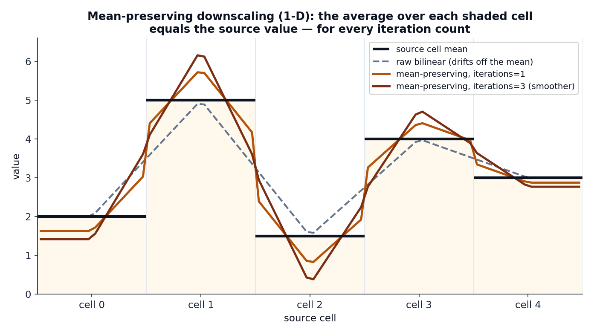
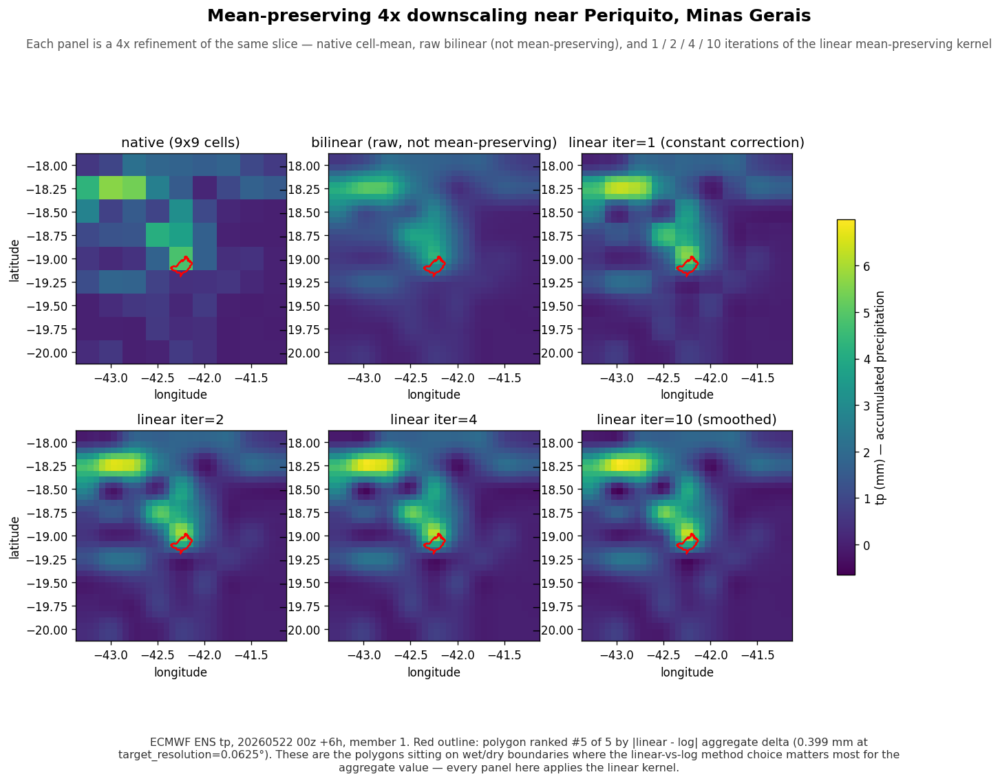

Mean-preserving downscaling¶
Many polygons are smaller than a single grid cell. Exact coverage will still answer — it returns the value of the cell the polygon sits in — but that answer is flat across the whole cell. geohalo can do better by refining the grid first, using neighbouring cells to give sub-cell polygons a sharper estimate.
The catch: a naive upsample (plain bilinear) drifts off the published cell mean.
geohalo's Resampler refines without breaking the contract that the grid encodes —
the average of a parent cell's children equals the parent's original value, exactly.
The contract¶
A gridded field publishes cell means. A refinement that respects this must satisfy, for every source cell \(s\) and its set of target children \(\{t : \pi(t) = s\}\):
Plain bilinear interpolation does not — it smooths across cell boundaries and quietly shifts each cell's average. The figure below shows the gap in one dimension:

And on a real ECMWF precipitation field over eastern Brazil:

Construction¶
From the source and target coordinate arrays, geohalo builds three
value-independent sparse matrices (geohalo.resampler._build_factors):
- \(\mathbf{B}\) — bilinear interpolation, target ← source. Separable as
\(\mathbf{B} = \mathbf{B}_\text{lat} \otimes \mathbf{B}_\text{lon}\), each 1-D factor
mapping source centres to target centres with clamped edges
(
bilinear_matrix_1d). - \(\pi\) — a nearest-cell assignment of each target cell to its parent source cell
(
nearest_index). From it:- \(\mathbf{P}\) — source → target broadcast: \(P_{t,\pi(t)} = 1\).
- \(\mathbf{A}\) — source ← target mean: \(A_{s,t} = 1/n_s\) when \(\pi(t) = s\), where \(n_s\) is the number of target cells assigned to source cell \(s\). A source cell with no children has an all-zero row.
The refinement is an interpolate-and-correct loop, linear in the source values \(\mathbf{x}\):
Each line measures the residual between the source value and the current average of its children (\(\mathbf{x} - \mathbf{A}\mathbf{y}\)) and adds it back — smoothly through \(\mathbf{B}\) during the iterations, then sharply through \(\mathbf{P}\) at the end.
Collapsing to a matrix¶
Because every step is linear, the whole loop collapses to a single transform \(\mathbf{T}\) with \(\mathbf{y} = \mathbf{T}\mathbf{x}\):
Why the mean is preserved exactly¶
The hard correction is what guarantees the contract. Since \(\mathbf{A}\mathbf{P} = \operatorname{diag}(n_s > 0)\), applying \(\mathbf{A}\) to \(\mathbf{T}\) gives
on every source cell that has at least one child — i.e. averaging a source cell's target children recovers the source value exactly, for any iteration count. This always holds when refining; when coarsening, a source cell with no assigned target can't be preserved (geometrically unavoidable, and geohalo leaves those rows zero).
The classic operator is the one-iteration case
With iterations = 1 the series has a single term and the transform reduces to the
textbook downscaling operator
\(\mathbf{M} = \mathbf{B} + \mathbf{P} - \mathbf{P}\mathbf{A}\mathbf{B}\).
Higher iteration counts are the N-term generalisation: the correction reaches
further across the grid, smoothing the result while still preserving every mean.
Cost: never materialise \(\mathbf{G}\)¶
\(\mathbf{G} = \mathbf{I} - \mathbf{B}\mathbf{A}\) is an \(N_\text{target} \times N_\text{target}\) operator that densifies under repeated products — forming its powers directly would be ruinous. geohalo never does. It accumulates the series by applying \(\mathbf{G}\) to \(\mathbf{B}\) on the right, so every intermediate stays \(N_\text{target} \times N_\text{source}\):
acc = term = B
for _ in range(iterations - 1):
term = term - B @ (A @ term) # term @ G, but kept thin
acc = acc + term
y_op = acc
The dense \(N_\text{target}^2\) matrix is never built. The build stays sub-second even
for large refinements; cost grows with iterations only because the transform fills
in as its reach expands. The default iterations = 1 is the cheapest.
Two forms of the resampler¶
geohalo ships the transform in two shapes for two different needs:
| Class | Holds | compute cost |
Use when |
|---|---|---|---|
Resampler |
the materialised \(\mathbf{T}\) | builds the full series | you want the refined grid itself |
FactoredResampler |
just \(\mathbf{B}, \mathbf{A}, \mathbf{P}\) | only the three base ops | you only want per-polygon values (the reduce path) |
Resampler is what resample_grid returns.
FactoredResampler is the key to the fused reduce operator: its
fuse_left(W) computes \(\mathbf{W}\mathbf{T}\) without ever materialising
\(\mathbf{T}\), so refining to a multi-million-cell grid stays cheap.
Using it¶
Or, through reduce, when the refinement is only a stepping stone to per-polygon values:
In the second form geohalo never builds the fine field at all — it fuses the resample into the stencil. That is the subject of the next page.